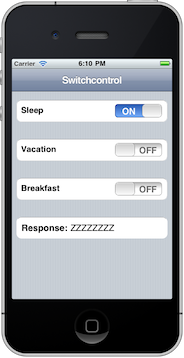
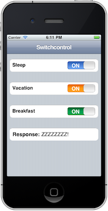

ChocolateChip-UI proves a switch control to allow you to present users with single choice options. These are equivalent to the checkboxes of Web site forms. ChocolateChip allows you to create switch controls both manually and dynamically.
If you created your switch controls manually, you will need to initialize them with the UIInitSwitchToggling method. You attach the method directly to the tableview holding the switch controls. It will search the tableview for any switch controls and initialize them so that they toggle properly.
You can create switch controls dynamically using the UICreateSwitchControl method. You can pass it fives parameters:
The id is required. The customClass value is optional. If you give a switch a custom class, you can then provide a style in your document's stylesheet to give the "ON" label as special look. If you passed in the class "mySpecialSwitchStyle", you could override the default blue with a style definition like this:
switchcontrol.mySpecialSwitchStyle > label[ui-implements=on] {
border: solid 1px green;
background-image:
-webkit-gradient(linear, left top, left bottom,
from(yellow),
color-stop(.5, green));
}
The parameter "value" gets inserted on the switch control as a ui-value attribute. You can get this value when the user toggles the switch. This is an optional arguement.
The callback argument is also optional. If you pass in a callback, you can use a placeholder parameter in the callback to refer to the switchcontrol when the callback gets executed. In the example below, the parameter "item" will refer to "this" when the callback gets executed, which will be the switch control itself. The code below will output the state of the switch control when the switch is flipped.
$.ready(function() {
var switchOpts = {
id : "switch_05",
customClass : "mySpecialSwitchStyle",
status : "on",
value : "sort of working",
callback : function(item) {
var className = item.className;
if (/on/.test(className)) {
console.log("This is on!");
} else {
console.log("This is turned off!!!");
}
}
};
$("tableview:last-of-type > tablecell").UICreateSwitchControl(switchOpts);
});
The act of creating the switch control automatically executes the UISwitchControl method to enable toggling of the switch's state. If you created a switch control manually, you also don't have to do anything to enable toggling. At load time ChocolateChip-UI checks for any switch controls and enables toggling for them.
Note: ChococlateChip-UI uses absolute positioning to place the switch controls on the left side of their container. If you create a switch control dynamically, ChocolateChip-UI checks the container into which you are inserting the switch control to see if it already has absolute positioning. If it does not, it sets relative positioning on the container so that the switch controls can be positioned properly. If you are creating switch controls manually, you will need to make sure that the container you are placing them in has at least relative positioning. Many kinds of WAML containers come with some position already applied. However, you may need to check in your browser's DOM inspector to see. If the switch control is not placed were you expected but off somewhere like the upper right of the screen, it means your container needs relative positioning.
In the case of manually created switch controls you would have to bind an event to handle user interaction, as their is no callback like when they are created dynamically. There are several ways you can check the state of a switch control. First and foremost, when the user flips a switch, ChocolateChip-UI registers a "checked" value of true on the switch control. You can query the "checked" status of the switch control itself.
Example:
<tableview ui-kind="grouped">
<tablecell>
<celltitle>Sleep</celltitle>
<switchcontrol class="off" id="sleepSwitch" ui-value="ZZZZZZZZ!">
<label ui-implements="on">ON</label>
<thumb><thumbprop></thumbprop></thumb>
<label ui-implements="off">OFF</label>
</switchcontrol>
</tablecell>
</tableview>
<tableview ui-kind="grouped">
<tablecell>
<celltitle>Vacation</celltitle>
<switchcontrol class="off" id="vacationSwitch" ui-value="Later! :-)">
<label ui-implements="on">ON</label>
<thumb><thumbprop></thumbprop></thumb>
<label ui-implements="off">OFF</label>
</switchcontrol>
</tablecell>
</tableview>
<tableview ui-kind="grouped">
<tablecell>
<celltitle>Breakfast</celltitle>
<switchcontrol class="off" id="breakfastSwtich" ui-implements="attention" ui-value="So, what's the first course?">
<label ui-implements="on">ON</label>
<thumb><thumbprop></thumbprop></thumb>
<label ui-implements="off">OFF</label>
</switchcontrol>
</tablecell>
</tableview>
Example:
Here's an example of getting the value of the switch control using its checked value. You could just as easily query the class of the switch control, whether it's set to "on" or "off".
$$("#tableview_01 switchcontrol").forEach(function(item) {
item.bind("click", function () {
if (this.checked === true) {
$("#switchResponse").empty();
$("#switchResponse").fill(this.getAttribute("ui-value"));
} else {
$("#switchResponse").empty();
}
});
item.bind("touchstart", function(e) {
if (this.checked === true) {
$("#switchResponse").empty();
} else {
$("#switchResponse").empty();
$("#switchResponse").fill(this.getAttribute("ui-value"));
}
});
});
I we put a custom class on any switch control we can style its "ON" label to have a unique color. Here's an example of a style for a green switch control. The image of what this looks like follows.
switchcontrol.custonSwitchStyle > label[ui-implements=on] {
border: solid 1px green;
background-image:
-webkit-gradient(linear, left top, left bottom,
from(yellow),
color-stop(.5, green));
}
If you want, you can also use the OFF state of the switch control to get a different value. Just put "ui-off-value" on the switch control and read that when the switch is in the OFF position.
 